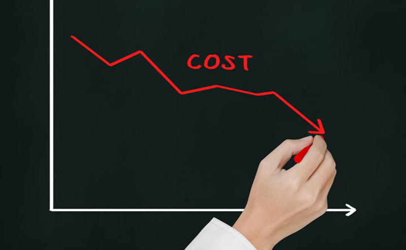

Introduction:
Lowering costs is an important aspect of sustainable development as it enables individuals, businesses, and communities to achieve economic growth and social progress while minimizing the impact on the environment. Lowering costs can be achieved through a range of strategies, including increased efficiency, improved technology, and innovative business models
Key strategies for improving health and safety for workers:
Energy efficiency: Energy efficiency measures can help to reduce costs associated with energy consumption, including heating, cooling, lighting, and transportation. Examples of energy efficiency measures include upgrading to more energy-efficient appliances, implementing building insulation, and using LED lighting.
Renewable energy: Investing in renewable energy sources such as solar, wind, and hydro power can help to reduce reliance on non-renewable resources and lower energy costs in the long term.
Circular economy: Implementing circular economy principles can help to reduce waste and increase the lifespan of products, leading to lower costs associated with raw materials and production.
Lean manufacturing: Lean manufacturing practices can help to reduce waste, improve production efficiency, and lower costs associated with manufacturing and production processes.
Innovation: Innovation in technology and business models can lead to new and more efficient ways of achieving sustainable development goals, ultimately leading to lower costs.Benefits of lower costs in sustainable development:
Increased affordability: Lower costs make sustainable practices more affordable for individuals, businesses, and communities, increasing access to sustainable solutions.
Improved competitiveness: Lower costs can help businesses to remain competitive in the global marketplace, leading to increased economic growth and job creation.
Reduced environmental impact: By reducing costs associated with resource consumption, sustainable development can help to minimize the impact on the environment.
Improved quality of life: Lower costs can lead to improved access to resources such as energy, water, and food, ultimately leading to an improved quality of life for individuals and communities.
Conclusion:
Lowering costs is an important aspect of sustainable development, as it can help to achieve economic growth and social progress while minimizing the impact on the environment. Key strategies for achieving lower costs include energy efficiency, renewable energy, circular economy, lean manufacturing, and innovation. Achieving lower costs has several benefits, including increased affordability, improved competitiveness, reduced environmental impact, and an improved quality of life for individuals and communities.